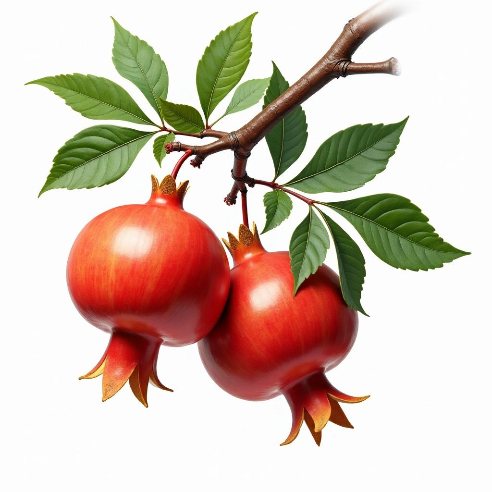
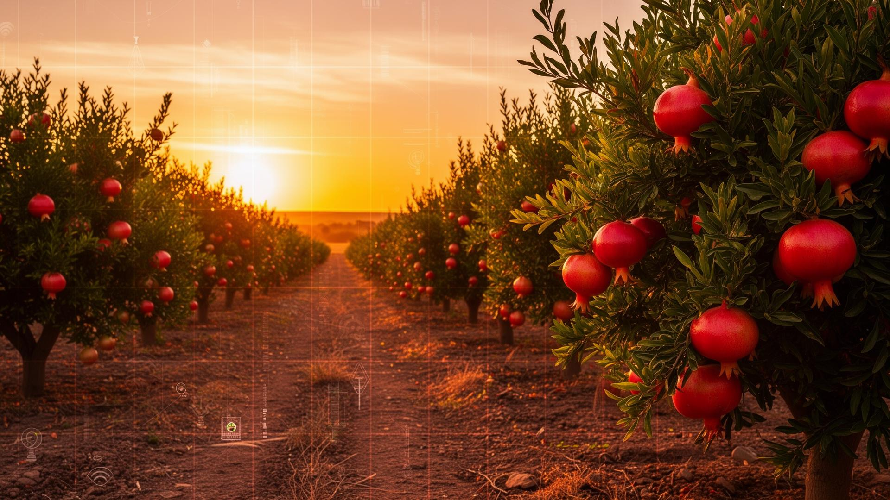

اكتشف الوقت المثالي للحصاد باستخدام تقنيات الرؤية الحاسوبية ونموذج YOLO للكشف عن مراحل نمو ثمار الرمان بدقة عالية.
نظام الذكاء الاصطناعي يكتشف هذه المراحل بدقة عالية
Bud
المرحلة الأولى من النمو
Flower
مرحلة الإزهار
Early Growth
بداية تكون الثمار
Mid Growth
مرحلة النمو النشط
Mature
جاهز للحصاد
مشروع بحثي أكاديمي يهدف إلى تطوير نظام ذكي لمساعدة المزارعين في تحديد الوقت الأمثل لحصاد الرمان باستخدام تقنيات الرؤية الحاسوبية والتعلم العميق.
تقنية كشف متقدمة للكائنات
نتائج دقيقة في ثوانٍ
تخزين آمن للبيانات